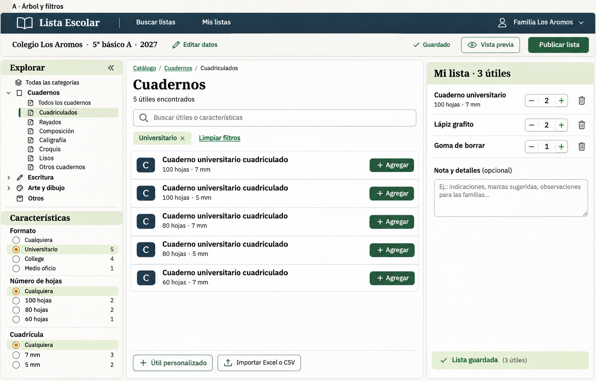
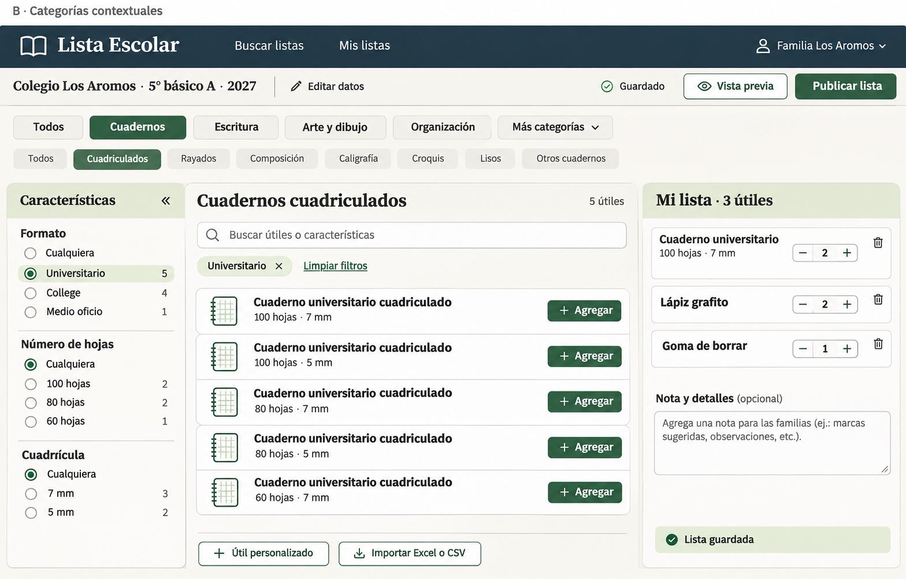
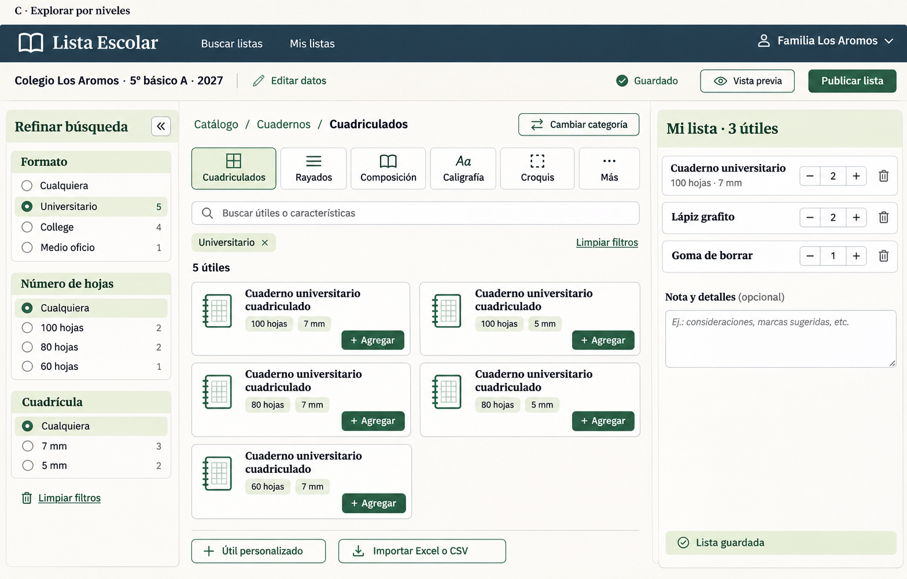

A · Árbol y filtros
Jerarquía explícita y un solo lugar para explorar. Al expandir categorías largas, los atributos quedan más abajo.
Dirección elegida: C. Ver la revisión con categorías y atributos, sin navegación de subcategorías.
Tres propuestas generadas con imagegen: atributos a la izquierda, categorías fáciles de recorrer y subcategorías visibles solo cuando existen. Son mockups para comparar antes de implementar.
Recomendación inicial de esta comparación: B. Categorías arriba, subcategorías contextuales y un drawer dedicado a características. La selección posterior del usuario y su refinamiento están enlazados arriba.
Cambio directo de categoría, subcategorías debajo y atributos visibles en un drawer izquierdo independiente.


Jerarquía explícita y un solo lugar para explorar. Al expandir categorías largas, los atributos quedan más abajo.
Acceso rápido a otras categorías y filtros siempre visibles. “Más categorías” evita saturar la barra.

Ruta clara y tarjetas para comparar características. Cambiar de categoría requiere abrir el selector.